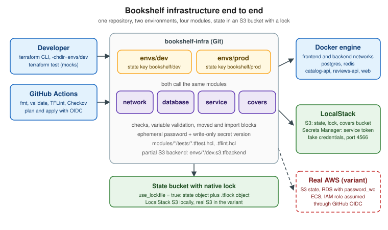

Bookshelf End to End
|
This content was generated with the assistance of AI and should be verified against the official documentation before being relied on in production. |
The earlier pages of this section each explain one idea in isolation. This page puts them in one repository and walks
through the order in which a team would actually build it: state first, then modules, then two environments, then the
safety net (checks, tests, linters, scanners), then the pipeline, and finally the two maintenance operations every
long-lived repository needs, adopting an object that already exists and renaming something that is already deployed. It
assumes the baseline of the rest of the section: Terraform 1.17 (OpenTofu 1.13 runs the same code, see the last
sections), hashicorp/aws 6.x and kreuzwerker/docker 4.x. It is the last page of the reading path and it links back to
the page that explains each part instead of repeating the explanation.
The scenario is Bookshelf: catalog-api, reviews-api and web containers, PostgreSQL, a covers bucket, a private
network, and a secret shared by the services. Everything runs on a laptop with Docker and LocalStack, so no cloud account
is needed. A later section shows what changes when the same repository targets a real AWS account. Bucket names, tokens,
role ARNs and registries are placeholders. Commands and console output are illustrative and abbreviated: no Terraform
binary was run to produce this page, so treat every transcript as the shape of the output, not as captured text.

What is built, and in which order
The order matters because each step needs the previous one:
-
A state bucket. Nothing else can be managed remotely until a place for the state exists. It is the one object that is created outside the configuration it serves (the chicken-and-egg problem described in Backends and Remote State).
-
Modules.
network,databaseandserviceare the modules built in Module Development and Publishing; this page adds a fourth,covers, for the object storage. -
Two root modules.
envs/devandenvs/prodare thin: a backend, providers, variables and calls to the modules, as recommended in Workspaces, Environments and Project Structure. -
Secrets, checks and validation. Rules that keep bad inputs and leaked secrets out (Sensitive Data, Ephemeral Values and Write-Only Arguments and Lifecycle, Validation and Checks).
-
Tests and static analysis.
terraform testwith a mocked provider, TFLint and Checkov (Testing and Code Quality and Security Scanning). -
The pipeline. GitHub Actions authenticating with OIDC, so no cloud key is stored (CI/CD and Automation).
-
Day-two operations. An
importblock and amovedblock (Import and Query and Refactoring: moved and removed).
Versions and tools used
| Component | Version | Why |
|---|---|---|
Terraform CLI |
1.17 (needs 1.11 or later) |
|
OpenTofu |
1.13 (ephemeral resources and write-only arguments since 1.11) |
Runs the same configuration; see the last sections. |
|
|
S3, Secrets Manager and, in the variant, RDS. Supports |
|
|
Containers and networks for the local variant. The older module pages show |
|
|
Ephemeral password and the health check. |
LocalStack |
current |
Emulates S3 and Secrets Manager on port 4566. Coverage varies per service and edition. |
TFLint, Checkov |
current releases |
Linting and policy scanning in CI. |
The final repository layout
This is the tree the rest of the page builds. Keep it in mind while reading; every file shown below has a place in it.
bookshelf-infra/
├── .github/
│ └── workflows/
│ ├── terraform-checks.yml # fmt, validate, test, TFLint, Checkov (no credentials)
│ └── terraform-deploy.yml # plan and apply with OIDC (real-cloud variant)
├── .gitignore # .terraform/, *.tfstate*, *.tfplan, *.tfvars with secrets
├── .tflint.hcl
├── Makefile
├── bootstrap/
│ └── localstack.sh # creates the state bucket (the only imperative step)
├── modules/
│ ├── network/ # tiers cut from one CIDR block (from the module page)
│ ├── database/ # PostgreSQL container, volume, healthcheck
│ ├── service/ # N replicas of one image (catalog-api, reviews-api, web)
│ └── covers/ # covers bucket: versioning, encryption, public access block
│ ├── versions.tf
│ ├── variables.tf
│ ├── main.tf
│ ├── outputs.tf
│ └── tests/covers.tftest.hcl
└── envs/
├── dev/
│ ├── backend.tf # backend "s3" {} (empty: partial configuration)
│ ├── dev.s3.tfbackend # bucket, key, endpoint, use_lockfile
│ ├── providers.tf
│ ├── variables.tf
│ ├── main.tf # module calls
│ ├── secrets.tf # ephemeral password + write-only secret version
│ ├── checks.tf # check block
│ ├── imports.tf # import block (adopt the hand-made bucket)
│ ├── refactor.tf # moved blocks
│ ├── outputs.tf
│ └── dev.tfvars
└── prod/
└── (same files, prod.s3.tfbackend and prod.tfvars)Step 1: LocalStack and the state bucket
The state bucket is created by a script, not by Terraform. Terraform could create it, but then it would need a state to record it, which is the bootstrap loop; the script keeps the loop outside. The credentials are the conventional dummy values that LocalStack accepts; none of them is a secret.
#!/usr/bin/env bash
# bootstrap/localstack.sh -- run once per machine
set -euo pipefail
docker run --rm -d --name localstack -p 127.0.0.1:4566:4566 localstack/localstack
export AWS_ACCESS_KEY_ID=test
export AWS_SECRET_ACCESS_KEY=test
export AWS_DEFAULT_REGION=us-east-1
endpoint=http://localhost:4566
# wait until the edge port answers
until curl -fsS "$endpoint/_localstack/health" >/dev/null; do sleep 2; done
aws --endpoint-url "$endpoint" s3 mb s3://bookshelf-tfstate
aws --endpoint-url "$endpoint" s3api put-bucket-versioning \
--bucket bookshelf-tfstate --versioning-configuration Status=Enabled
# a bucket somebody created by hand before Terraform existed (adopted in a later step)
aws --endpoint-url "$endpoint" s3 mb s3://bookshelf-dev-coversVersioning on the state bucket lets you recover an earlier snapshot after a bad write. The last command creates the
pre-existing object that the import step adopts later. Stopping the container (docker stop localstack) discards
everything unless persistence is enabled, so rerun the script after a restart and remember that the state is gone too.
Step 2: the modules
Three modules already exist in Module Development and Publishing and are used here unchanged apart from the provider constraint. Their interfaces are what the root modules rely on:
| Module | Inputs the root module passes | Outputs the root module reads |
|---|---|---|
|
|
|
|
|
|
|
|
|
|
|
|
For a new repository set the Docker provider constraint in each module’s versions.tf to version = "~> 4.6" (the
module page uses a wider >= 3.0 for compatibility). A module should declare what it needs, not configure it, so none of
the four contains a provider block.
The covers module
Covers (book cover images) live in an S3-compatible bucket. The module is small on purpose, and it carries the rules that must hold in every environment: no public access, versioning on, server-side encryption on, and a name that follows the convention.
# modules/covers/versions.tf
terraform {
required_version = ">= 1.11"
required_providers {
aws = {
source = "hashicorp/aws"
version = "~> 6.0"
}
}
}# modules/covers/variables.tf
variable "name_prefix" {
type = string
description = "Prefix of the bucket name, for example bookshelf-dev. The module appends -covers."
validation {
condition = can(regex("^[a-z][a-z0-9-]{2,40}$", var.name_prefix))
error_message = "The name_prefix must start with a letter and contain 3 to 41 lowercase letters, digits or hyphens."
}
}
variable "force_destroy" {
type = bool
description = "Allow destroying a bucket that still holds objects. Keep false in production."
default = false
}
variable "versioned" {
type = bool
description = "Keep previous versions of every cover."
default = true
}# modules/covers/main.tf
resource "aws_s3_bucket" "this" {
# checkov:skip=CKV_AWS_144:Cross-region replication is not needed for re-creatable covers
# checkov:skip=CKV_AWS_18:Access logging is configured at account level in this scenario
bucket = "${var.name_prefix}-covers"
force_destroy = var.force_destroy
}
resource "aws_s3_bucket_public_access_block" "this" {
bucket = aws_s3_bucket.this.id
block_public_acls = true
block_public_policy = true
ignore_public_acls = true
restrict_public_buckets = true
}
resource "aws_s3_bucket_versioning" "this" {
bucket = aws_s3_bucket.this.id
versioning_configuration {
status = var.versioned ? "Enabled" : "Suspended"
}
}
resource "aws_s3_bucket_server_side_encryption_configuration" "this" {
bucket = aws_s3_bucket.this.id
rule {
apply_server_side_encryption_by_default {
sse_algorithm = "AES256"
}
}
}# modules/covers/outputs.tf
output "bucket_name" {
description = "Name of the covers bucket."
value = aws_s3_bucket.this.bucket
}
output "bucket_arn" {
description = "ARN of the covers bucket, for IAM policies."
value = aws_s3_bucket.this.arn
}Source: AWS provider — aws_s3_bucket, aws_s3_bucket_public_access_block, aws_s3_bucket_versioning and aws_s3_bucket_server_side_encryption_configuration
The two checkov:skip comments travel with the resource and appear in the scan as skipped checks with a reason, which is
how a reviewer sees a deliberate exception. The longer discussion of the S3 resources is in
Terraform on AWS.
Step 3: the backend, one partial file per environment
Backend blocks cannot use variables, so the block is empty and each environment supplies the settings with
-backend-config (partial configuration). Two environments share the bucket and differ only in the key, which is the
design the workspaces page recommends when separate accounts are not available.
# envs/dev/backend.tf
terraform {
required_version = ">= 1.11"
backend "s3" {}
}# envs/dev/dev.s3.tfbackend
bucket = "bookshelf-tfstate"
key = "bookshelf/dev/terraform.tfstate"
region = "us-east-1"
# LocalStack, not AWS: remove these lines for a real bucket
endpoints = {
s3 = "http://localhost:4566"
}
use_path_style = true
skip_credentials_validation = true
skip_requesting_account_id = true
skip_metadata_api_check = true
skip_region_validation = true
skip_s3_checksum = true
# native locking: a .tflock object next to the state object
use_lockfile = trueenvs/prod/prod.s3.tfbackend is identical except for key = "bookshelf/prod/terraform.tfstate". The file holds no
secret: the dummy credentials come from AWS_ACCESS_KEY_ID and AWS_SECRET_ACCESS_KEY in the environment. As the
backends page notes, LocalStack’s documentation does not state that it enforces the .tflock object, so verify locking
yourself in step 5 before relying on it.
Step 4: the dev root module
The root module is the only place that knows how the modules fit together and where the providers point. The same code
serves prod; only the values change.
# envs/dev/providers.tf
terraform {
required_providers {
docker = {
source = "kreuzwerker/docker"
version = "~> 4.6"
}
aws = {
source = "hashicorp/aws"
version = "~> 6.0"
}
random = {
source = "hashicorp/random"
version = "~> 3.9"
}
http = {
source = "hashicorp/http"
version = "~> 3.4"
}
}
}
provider "docker" {}
# LocalStack endpoints. For a real account these arguments are removed (see the variant section).
provider "aws" {
region = var.region
access_key = "test"
secret_key = "test"
skip_credentials_validation = true
skip_metadata_api_check = true
skip_requesting_account_id = true
s3_use_path_style = true
endpoints {
s3 = "http://localhost:4566"
secretsmanager = "http://localhost:4566"
}
}# envs/dev/variables.tf
variable "environment" {
type = string
description = "Environment name, used in resource names."
validation {
condition = contains(["dev", "prod"], var.environment)
error_message = "The environment must be dev or prod."
}
}
variable "region" {
type = string
default = "us-east-1"
}
variable "vpc_cidr" {
type = string
default = "172.28.0.0/16"
}
variable "catalog_api_image" {
type = string
description = "catalog-api image with an explicit tag. Placeholder registry."
default = "ghcr.io/example-org/bookshelf-catalog-api:1.4.2"
}
variable "reviews_api_image" {
type = string
description = "reviews-api image with an explicit tag. Placeholder registry."
default = "ghcr.io/example-org/bookshelf-reviews-api:2.0.1"
}
variable "catalog_api_replicas" {
type = number
default = 1
}
variable "web_port" {
type = number
description = "Host port that publishes web."
default = 8080
validation {
condition = var.web_port >= 1024 && var.web_port <= 65535
error_message = "The web_port must be an unprivileged port, 1024 to 65535."
}
}
variable "db_password" {
type = string
description = "PostgreSQL superuser password. Supply it as TF_VAR_db_password; never commit it."
sensitive = true
validation {
condition = length(var.db_password) >= 16
error_message = "The db_password must be at least 16 characters long."
}
}
variable "covers_force_destroy" {
type = bool
default = true
}
variable "service_token_version" {
type = number
description = "Increment to rotate the shared service token."
default = 1
}# envs/dev/main.tf
module "network" {
source = "../../modules/network"
name = "bookshelf-${var.environment}"
cidr_block = var.vpc_cidr
}
module "database" {
source = "../../modules/database"
name = "postgres-${var.environment}"
network_name = module.network.network_names["backend"]
image_tag = "16"
password = var.db_password
}
module "catalog_api" {
source = "../../modules/service"
name = "catalog-api-${var.environment}"
image = var.catalog_api_image
replicas = var.catalog_api_replicas
networks = [
module.network.network_names["frontend"],
module.network.network_names["backend"],
]
env = {
DATABASE_HOST = module.database.host
DATABASE_PORT = tostring(module.database.port)
DATABASE_NAME = module.database.database_name
TOKEN_SECRET = aws_secretsmanager_secret.service_token.name
COVERS_BUCKET = module.covers.bucket_name
}
secret_env = {
DATABASE_URL = module.database.connection_url
}
ports = [{ internal = 8080 }]
}
module "reviews_api" {
source = "../../modules/service"
name = "reviews-api-${var.environment}"
image = var.reviews_api_image
networks = [
module.network.network_names["frontend"],
module.network.network_names["backend"],
]
env = {
TOKEN_SECRET = aws_secretsmanager_secret.service_token.name
}
secret_env = {
DATABASE_URL = module.database.connection_url
}
ports = [{ internal = 8081 }]
}
module "web" {
source = "../../modules/service"
name = "web-${var.environment}"
image = "nginx:1.27"
networks = [module.network.network_names["frontend"]]
env = {
CATALOG_API_URL = module.catalog_api.internal_urls["8080"]
REVIEWS_API_URL = module.reviews_api.internal_urls["8081"]
}
ports = [{ internal = 80, external = var.web_port }]
}
module "covers" {
source = "../../modules/covers"
name_prefix = "bookshelf-${var.environment}"
force_destroy = var.covers_force_destroy
}# envs/dev/outputs.tf
output "web_url" {
value = "http://localhost:${var.web_port}"
}
output "covers_bucket" {
value = module.covers.bucket_name
}
output "service_token_secret" {
description = "Name of the Secrets Manager secret. The token itself is never an output."
value = aws_secretsmanager_secret.service_token.name
}# envs/dev/dev.tfvars
environment = "dev"
region = "us-east-1"
vpc_cidr = "172.28.0.0/16"
catalog_api_replicas = 1
web_port = 8080
covers_force_destroy = true# envs/prod/prod.tfvars -- the only differences from dev
environment = "prod"
region = "us-east-1"
vpc_cidr = "172.29.0.0/16"
catalog_api_replicas = 2
web_port = 8090
covers_force_destroy = falseSource: Terraform Docs — module block reference, Terraform Docs — Module composition and Terraform Registry — AWS provider
Points worth noticing:
-
Every container and network name includes the environment, so the dev and prod root modules can run on the same Docker engine without colliding. The prod CIDR differs for the same reason (Docker networks cannot overlap).
-
module.catalog_apihas two replicas in prod, so its published port stays internal; onlywebpublishes a host port, which is the cross-variable rule of theservicemodule at work. -
There is no
depends_on. References such asmodule.database.connection_urlandmodule.network.network_namesproduce the dependency graph, as explained in Dependency Graph and Plan. -
The password is not in any file. The variable is
sensitive, has no default, and receives its value fromTF_VAR_db_password(step 5). In the Docker variant the value still reaches the container’senvargument and is recorded in state, which is why the state bucket is private and versioned; the Docker provider page describes the limitation, and the real-cloud variant removes it. -
prod.tfvarssetscovers_force_destroy = false, so aterraform destroyof production cannot silently delete a bucket that still holds covers.
Secrets: ephemeral generation, write-only storage
The services need a shared token. It is generated ephemerally, written once to Secrets Manager through a write-only argument, and fetched by the containers at start-up with their own identity. Terraform never stores it, and it is not an output.
# envs/dev/secrets.tf
ephemeral "random_password" "service_token" {
length = 48
special = false
}
resource "aws_secretsmanager_secret" "service_token" {
name = "bookshelf/${var.environment}/service-token"
recovery_window_in_days = 0 # allow immediate re-creation after destroy; use 7 to 30 for production
}
resource "aws_secretsmanager_secret_version" "service_token" {
secret_id = aws_secretsmanager_secret.service_token.id
secret_string_wo = ephemeral.random_password.service_token.result
secret_string_wo_version = var.service_token_version
}Source: Terraform Docs — Ephemerality, AWS provider — aws_secretsmanager_secret_version and random provider — random_password ephemeral resource
A write-only argument is sent to the provider and never saved, so Terraform cannot tell by itself that the value should
change. The companion secret_string_wo_version is the trigger: raising service_token_version in the tfvars file makes
the next apply generate and write a fresh token. Set recovery_window_in_days to a real window in production; zero is a
convenience for a disposable local environment. This pattern, the alternatives and the places where an ephemeral value is
not allowed are explained in
Sensitive Data, Ephemeral Values and Write-Only Arguments.
LocalStack does not document its support for write-only secret versions; if your emulator version rejects the call, test
this file against a real account or keep the pattern and mock it in tests.
A check for the running system
A check block validates the world after the apply without failing it. Here it asks the published web port for a
response. It warns, rather than errors, which is the right severity for a health probe that depends on container start-up.
# envs/dev/checks.tf
check "web_responds" {
data "http" "web" {
url = "http://localhost:${var.web_port}/"
# Without this the first plan, before the container exists, would warn.
depends_on = [module.web]
}
assert {
condition = data.http.web.status_code == 200
error_message = "web answered ${data.http.web.status_code} on port ${var.web_port}."
}
}Variable validation blocks (the password length, the port range, the environment name) fail at plan time; the check
fails softly after the apply. The page
Lifecycle, Validation and Checks has the full comparison,
including when to prefer a precondition.
Step 5: init, plan, apply and the lock test
The first run initializes the backend with the tfbackend file, supplies the password through the environment and uses an explicit variable file.
export AWS_ACCESS_KEY_ID=test
export AWS_SECRET_ACCESS_KEY=test
export TF_VAR_db_password="$(openssl rand -base64 24 | tr -d '/+=')" # local only; keep it in a password manager
cd envs/dev
terraform init -backend-config=dev.s3.tfbackend
terraform fmt -check -recursive ../..
terraform validate
terraform plan -var-file=dev.tfvars -out=dev.tfplan
terraform apply dev.tfplan$ terraform plan -var-file=dev.tfvars -out=dev.tfplan
# abbreviated and illustrative
# module.network.docker_network.tier["backend"] will be created
# module.database.docker_container.this will be created
# module.catalog_api.docker_container.this["0"] will be created
# module.covers.aws_s3_bucket.this will be created
# aws_secretsmanager_secret.service_token will be created
# aws_secretsmanager_secret_version.service_token will be created
...
Plan: 20 to add, 0 to change, 0 to destroy.The resource count in the transcript is a placeholder; yours depends on the provider and module versions. The saved plan
(dev.tfplan) can contain sensitive values, so it is ignored by Git. Repeat the commands in envs/prod with
prod.s3.tfbackend and prod.tfvars and a different password.
Verifying that the lock works
Run two applies at the same time and confirm that the second is refused.
terraform apply -var-file=dev.tfvars -auto-approve &
sleep 2
terraform apply -var-file=dev.tfvars -auto-approve -lock-timeout=0s
wait
aws --endpoint-url http://localhost:4566 s3 ls s3://bookshelf-tfstate/bookshelf/dev/Source: Terraform Docs — State locking
When the lock is enforced, the second command reports that the state is locked and the listing briefly shows a
terraform.tfstate.tflock object next to the state object. If both applies proceed, your LocalStack version does not
implement the conditional writes that use_lockfile needs: keep the setting in the repository (it is correct for real
S3) and treat the local environment as single-user. After an interrupted run, terraform force-unlock <LOCK_ID> releases
the lock, but only when you are sure that nobody is still running.
Step 6: adopt an object that already exists
The bootstrap script created bookshelf-dev-covers by hand, as a team often does before it adopts Terraform. Terraform
would otherwise try to create a bucket that already exists and fail. An import block makes the adoption reviewable: it is
a plan item, not a command typed once on one laptop.
# envs/dev/imports.tf
import {
to = module.covers.aws_s3_bucket.this
id = "bookshelf-dev-covers"
}$ terraform plan -var-file=dev.tfvars
# abbreviated and illustrative
# module.covers.aws_s3_bucket.this will be imported
# module.covers.aws_s3_bucket_versioning.this will be created
# module.covers.aws_s3_bucket_public_access_block.this will be created
# module.covers.aws_s3_bucket_server_side_encryption_configuration.this will be created
Plan: 1 to import, 3 to add, 0 to change, 0 to destroy.The plan shows what the module will do to the bucket besides adopting it: the three configuration resources are new
because the hand-made bucket had no versioning, encryption or public access block. That is the value of importing through
the module, since the bucket is brought up to the standard in the same review. Once the apply finishes, the import block
is finished work and can stay (it is idempotent) or be removed in a later change. The import block belongs to the root
module, and its to address reaches into the module; the import page lists the cases, including
-generate-config-out for objects with many arguments.
Step 7: a rename that must not recreate anything
During review the name reviews for the second API is judged too vague, and the module call is renamed to
reviews_api. Without help, Terraform sees one module disappear and another appear, and plans to destroy and recreate its
containers. A moved block records the rename instead.
# envs/dev/refactor.tf -- history of address changes; keep until every environment has applied them
moved {
from = module.reviews
to = module.reviews_api
}$ terraform plan -var-file=dev.tfvars
# abbreviated and illustrative
# module.reviews has moved to module.reviews_api
...
Plan: 0 to add, 0 to change, 0 to destroy.Copy the same moved block to envs/prod/refactor.tf: each environment has its own state and must apply the move
separately. A module test or a CI step that asserts the plan contains no delete or replace actions turns this into a
guard rail. Retiring an object without destroying it uses the sibling removed block with destroy = false; both are
covered in
Refactoring: moved and removed.
Step 8: tests, linting and scanning
Cheap checks run first and need no credentials: format, validate, unit tests with a mocked provider, TFLint and Checkov.
A unit test with a mocked AWS provider
The covers module is tested without LocalStack or any account: the provider is mocked, and a second run proves that an
invalid prefix is rejected.
# modules/covers/tests/covers.tftest.hcl
mock_provider "aws" {}
variables {
name_prefix = "bookshelf-test"
}
run "bucket_is_private_and_versioned" {
command = apply
assert {
condition = aws_s3_bucket.this.bucket == "bookshelf-test-covers"
error_message = "The bucket must be named after the prefix."
}
assert {
condition = aws_s3_bucket_public_access_block.this.block_public_policy
error_message = "Public bucket policies must be blocked."
}
assert {
condition = aws_s3_bucket_versioning.this.versioning_configuration[0].status == "Enabled"
error_message = "Versioning must be enabled by default."
}
}
run "invalid_prefix_is_rejected" {
command = plan
variables {
name_prefix = "Bad Prefix"
}
expect_failures = [var.name_prefix]
}Run it from the module directory with terraform init -backend=false and terraform test. The network module has the
plan-only test shown in the module page; the database and service modules would mock the docker provider in the same
way, as in the testing page.
TFLint
# .tflint.hcl
tflint {
required_version = ">= 0.50"
}
config {
call_module_type = "local"
}
plugin "terraform" {
enabled = true
preset = "recommended"
}
plugin "aws" {
enabled = true
version = "0.50.0"
source = "github.com/terraform-linters/tflint-ruleset-aws"
}
rule "terraform_documented_variables" {
enabled = true
}
rule "terraform_documented_outputs" {
enabled = true
}
rule "terraform_naming_convention" {
enabled = true
}Source: TFLint — Configuring TFLint
The AWS ruleset version is a pinned example from the scanning page; update it from the ruleset’s releases.
One entry point for developers and CI
# Makefile
ENVS := dev prod
.PHONY: check fmt validate test lint scan
check: fmt validate test lint scan
fmt:
terraform fmt -check -recursive -diff
validate:
for e in $(ENVS); do \
terraform -chdir=envs/$$e init -backend=false -input=false && \
terraform -chdir=envs/$$e validate || exit 1; \
done
test:
for m in network database service covers; do \
terraform -chdir=modules/$$m init -backend=false -input=false && \
terraform -chdir=modules/$$m test || exit 1; \
done
lint:
tflint --init
tflint --recursive --format compact
scan:
checkov -d . --framework terraform --quiet --compactBecause the same targets run on a laptop and in CI, a pipeline failure can always be reproduced with make check. On an
existing repository with many findings, adopt Checkov with --create-baseline first and fail only on new findings, as the
scanning page describes. Findings that are deliberate are skipped in code, with a reason, as in the covers module.
Step 9: GitHub Actions with OIDC
Two workflows split read from write. The checks workflow needs no credentials and runs for every pull request, including forks. The deploy workflow assumes an AWS role through OpenID Connect, so there is no stored access key. It targets the real-cloud variant of the next section, because GitHub-hosted runners cannot reach the LocalStack on your laptop (the same workflow can run against a LocalStack service container if you want a full local rehearsal in CI).
# .github/workflows/terraform-checks.yml
name: terraform-checks
on:
pull_request:
paths:
- "modules/**"
- "envs/**"
- ".github/workflows/terraform-*.yml"
permissions:
contents: read
env:
TF_IN_AUTOMATION: "true"
TF_INPUT: "false"
jobs:
checks:
runs-on: ubuntu-latest
steps:
- uses: actions/checkout@v7
- uses: hashicorp/setup-terraform@v4
with:
terraform_wrapper: false
- uses: terraform-linters/setup-tflint@v6
- name: install Checkov
run: pip install checkov==3.3.30
- name: make check
run: make checkSource: hashicorp/setup-terraform README, terraform-linters/setup-tflint README and actions/checkout README
# .github/workflows/terraform-deploy.yml
name: terraform-deploy
on:
push:
branches: [main]
paths:
- "modules/**"
- "envs/**"
permissions:
contents: read
env:
TF_IN_AUTOMATION: "true"
TF_INPUT: "false"
jobs:
dev:
runs-on: ubuntu-latest
environment: dev
concurrency:
group: terraform-dev
cancel-in-progress: false
permissions:
contents: read
id-token: write # request the GitHub OIDC token
steps:
- uses: actions/checkout@v7
- uses: hashicorp/setup-terraform@v4
with:
terraform_wrapper: false
- uses: aws-actions/configure-aws-credentials@v6
with:
role-to-assume: ${{ vars.AWS_ROLE_ARN }} # an environment variable of "dev"
aws-region: ${{ vars.AWS_REGION }}
- name: apply dev
working-directory: envs/dev
run: |
terraform init -backend-config=dev.aws.s3.tfbackend
terraform apply -auto-approve -lock-timeout=5m -var-file=dev.aws.tfvars
env:
TF_VAR_db_password: ${{ secrets.DEV_DB_PASSWORD }}
prod:
needs: dev
runs-on: ubuntu-latest
environment: production # required reviewers are enforced here
concurrency:
group: terraform-prod
cancel-in-progress: false
permissions:
contents: read
id-token: write
steps:
- uses: actions/checkout@v7
- uses: hashicorp/setup-terraform@v4
with:
terraform_wrapper: false
- uses: aws-actions/configure-aws-credentials@v6
with:
role-to-assume: ${{ vars.AWS_ROLE_ARN }} # an environment variable of "production"
aws-region: ${{ vars.AWS_REGION }}
- name: plan prod
working-directory: envs/prod
run: |
terraform init -backend-config=prod.aws.s3.tfbackend
terraform plan -lock-timeout=5m -var-file=prod.aws.tfvars -out=tfplan
- name: apply prod
working-directory: envs/prod
run: terraform apply -lock-timeout=5m tfplanSource: HashiCorp Developer — Automate Terraform with GitHub Actions, aws-actions/configure-aws-credentials README and GitHub Docs — Managing environments for deployment
Notes on the pipeline:
-
The majors in the workflow (
actions/checkoutv7,hashicorp/setup-terraformv4,terraform-linters/setup-tflintv6,aws-actions/configure-aws-credentialsv6) are the ones the CI page verified. Thehashicorp/setup-terraformREADME shows v4, not the v3 mentioned in the original issue for this section. -
id-token: writeis what lets the job request a GitHub OIDC token. The role’s trust policy must accept only this repository and the matching environment as subject (repo:ORG/REPO:environment:production), as in the Terraform snippet of the CI page. The role ARN is an identifier, not a secret, and lives in an environment variable. -
The database password still comes from a repository environment secret in this simplified file. Where the cloud supports it, replace it with a write-only argument and a generated password (next section) so that even that secret disappears.
-
The production job waits for the
productionenvironment’s required reviewers. The CI page shows the stricter variant that saves the reviewed plan as an artifact and applies exactly that file; use it for production.
Step 10: the real-cloud variant
The structure does not change. What changes is below the module interfaces and in the provider and backend files.
| Piece | Local (this page) | Real AWS |
|---|---|---|
Backend file |
|
|
|
dummy keys, |
no credentials in code: OIDC in CI, SSO or a profile on a laptop; |
|
Docker networks cut with |
|
|
PostgreSQL container, password from |
|
|
Docker containers |
ECS services on Fargate behind a load balancer |
|
unchanged |
unchanged |
Secrets |
LocalStack Secrets Manager |
AWS Secrets Manager, same |
# envs/prod/prod.aws.s3.tfbackend
bucket = "bookshelf-tfstate-example" # placeholder; created by a separate bootstrap
key = "bookshelf/prod/terraform.tfstate"
region = "eu-west-1"
encrypt = true
use_lockfile = true# modules/database-aws/main.tf (replaces modules/database in the cloud variant)
variable "password_version" {
type = number
description = "Increment to rotate the master password."
default = 1
}
ephemeral "random_password" "db" {
length = 32
special = false
}
resource "aws_db_instance" "this" {
identifier = var.name
engine = "postgres"
instance_class = var.instance_class
allocated_storage = 20
storage_encrypted = true
username = "bookshelf_admin"
skip_final_snapshot = var.environment != "prod"
password_wo = ephemeral.random_password.db.result
password_wo_version = var.password_version
db_subnet_group_name = var.db_subnet_group_name
vpc_security_group_ids = var.security_group_ids
}Source: Terraform Docs — Backend type: s3, AWS provider — aws_db_instance and AWS provider — aws_secretsmanager_secret_version
An alternative that avoids handling the password at all is manage_master_user_password = true, which lets RDS keep the
master password in Secrets Manager; the AWS page shows it. Whichever is chosen, the database module keeps the same
outputs, so the root module changes only its source and the arguments that differ. The full AWS baseline (VPC, RDS,
ElastiCache, IAM roles, ECS) is in Terraform on AWS; the identity side of the
OIDC role is in AWS Identity and Access Management and
AWS Infrastructure as Code. Azure and Google Cloud follow the same recipe with
their own state backends and federation: see Terraform on Azure and
Terraform on Google Cloud.
The Docker provider page also shows how the same application is expressed as Kubernetes objects and Helm releases, for the teams that run Bookshelf on a cluster: Docker, Kubernetes and Helm Providers.
Cleaning up
Destroy in the reverse order of creation, production first only if you really mean it. The covers bucket in dev has
force_destroy = true, so it is removed with its contents; prod has false and refuses until the bucket is empty.
cd envs/dev
terraform destroy -var-file=dev.tfvars
cd ../..
docker stop localstack # the state bucket and the state vanish with the containerSource: Terraform Docs — destroy
Using OpenTofu instead
The configuration uses only features that exist in both tools at the versions shown: partial backend configuration, S3
use_lockfile, ephemeral resources and write-only arguments (OpenTofu 1.11 and later), check blocks, import, moved
and mock providers. Replace terraform with tofu in the Makefile and the workflows, install it with
opentofu/setup-opentofu (v2 as verified in the CI page) and run the checks as a matrix to prove the compatibility, as
that page shows. OpenTofu’s own state encryption and early evaluation are not used here; adopting them would make the
repository OpenTofu-only. See OpenTofu for the differences.
Pitfalls collected from the build
-
Applying prod from a laptop. The pipeline should be the only identity that can write production state. Give laptops read-only roles.
-
Sharing one state key. Dev and prod must use different keys (and ideally different buckets and accounts). A wrong key makes
planpropose destroying the other environment. -
Forgetting the password variable. An unset
TF_VAR_db_passwordprompts in a terminal and fails in CI withTF_INPUT=false; that failure is deliberate. -
Committing plan files or tfvars with secrets. Saved plans can contain sensitive values. Keep
*.tfplanand secret tfvars out of Git. -
Expecting a write-only argument to track changes. Without a version bump the secret never rotates.
-
Moving without moved. Renaming a module call or resource without a
movedblock plans a destroy and create. -
Trusting a local lock. Verify locking on every backend you use before relying on it, as in step 5.
-
Emulator settings in production code. Keep
endpoints,skip_*and dummy keys out of the real provider and backend files; the table in the variant section lists what to remove.
Limits of the local setup
-
LocalStack does not document its enforcement of the
.tflocklock object or its support for write-only Secrets Manager versions, so test both on the LocalStack version you run before relying on them. -
Resource counts and console output in the transcripts are abbreviated; your runs print more detail.
-
The TFLint AWS ruleset version and the Checkov pin are examples; pin the versions current when you adopt them.